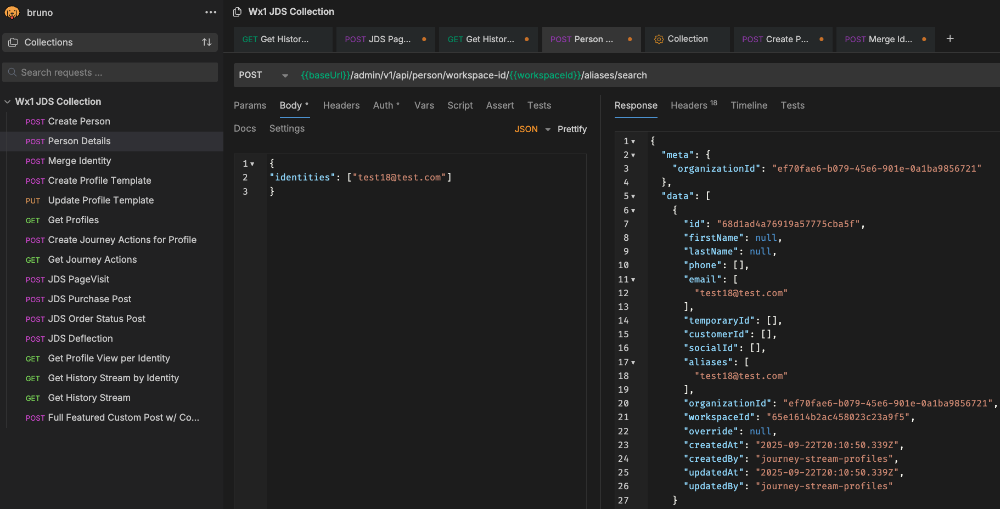
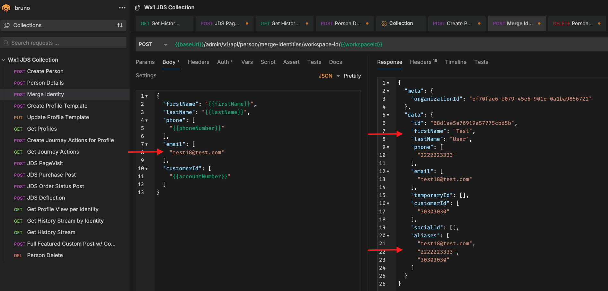
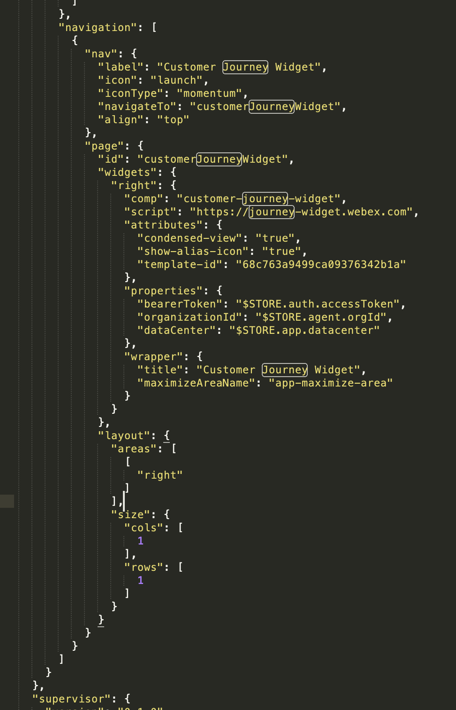

JDS Identity Management, Progressive Profiles, and Actions 

Lab 2.1 Identity Management
Instructions
-
In the previous lab, we sent a Page Visit event to JDS using a fake email as the identity. However, we did not create this identity in JDS ahead of time. Let's check what is the current view of this person within JDS. Go to the Person Details request, enter the fake email you used in the identities section, and send the request:
Empty Identity IMG

-
The response has no name, phone, or customer ID. JDS automatically created this profile when you sent the Page Visit event. Use the Merge Identity API to add more details to this person profile. Select Merge Identity in Bruno, fill out the fields in the body, and send the request.
Merge Identity IMG

-
Click Get History Stream by identity, replace the identity with the phone number variable, and send the request. You should see the Page Visit event that was originally associated only with the fake email now associated with the merged phone identity.
Note
There are other ways to create and edit identities in JDS. You can create identities in bulk from Control Hub or create person profiles programmatically by using the Create Person API.


Lab 2.2 Adding JDS to the Navigation Page of the Agent Desktop
The JDS widget is included in the Default Desktop Layout. For this lab, you will add the JDS widget to the navigation pane so that you can view the customer journey without an active interaction.
Instructions
- In Control Hub, go to the Desktop Layouts menu. Click Create Desktop Layout. Enter the name
POD-XX_Layoutand select the team associated with your POD number. -
Download the JDS_LAB_Layout and open it using Notepad++. Find the Navigation section and replace the existing data with the following widget information:
{ "nav": { "label": "Journey Data Services", "icon": "accessories", "iconType": "momentum", "navigateTo": "customerJourneyWidget", "align": "top" }, "page": { "id": "customerJourneyWidget", "widgets": { "right": { "comp": "customer-journey-widget", "script": "https://journey-widget.webex.com", "attributes": { "show-alias-icon": "true", "condensed-view": "true", "enable-user-search": "true" }, "properties": { "bearerToken": "$STORE.auth.accessToken", "organizationId": "$STORE.agent.orgId", "dataCenter": "$STORE.app.datacenter" }, "wrapper": { "title": "Customer Journey Widget", "maximizeAreaName": "app-maximize-area" } } }, "layout": { "areas": [["right"]], "size": { "cols": [1], "rows": [1] } } } }Use the following picture to confirm that you modified the JSON file correctly:
JDS Navigation Section

-
Save the file. Back in Desktop Layouts, select Replace file, select the modified file, and click Create.
- In an incognito window, navigate to the WxCC Agent Desktop and sign in with the agent credentials supplied by a lab proctor.
- Set your Station Credentials to the Desktop telephony option.
- Select the JDS widget in the navigation pane and search for your identity.
- The widget should show the events you previously sent and the default profile-template metrics in the JDS widget header.

Now create your own profile template to modify the metrics.
Lab 2.3 Profile Templates
Administrators can use profile templates to customize the data presented to an agent in the JDS widget header. In this section, you will create a profile that displays the number of Page Visit events in the last 48 hours.

Instructions
-
In Bruno, select the API called Create Profile Template. You can add multiple metrics to a profile. Modify the first entry in the API JSON as follows. Keep the existing
task:newevent type and Page Visit rule; only the lookback window has changed from two hours to 48 hours."name": "PageVisits_PODXX", "attributes": [ { "version": "1.0", "event": "task:new", "metaDataType": "STRING", "metaData": "channelType", "limit": 100, "displayName": "Page Visits within 48 hours", "lookBackDurationType": "HOURS", "lookBackPeriod": 48, "aggregationMode": "COUNT", "rules": { "logic": "SINGLE", "condition": "task:new,channelType,string,Value EQ Website" }, "widgetAttributes": { "type": "table" }, "verbose": false } -
Confirm that the other metrics for Contacts within 10 days and Contacts within 24 hours are included in the JSON body.
- Send the POST API call to create the profile.
- Select the GET Profiles API and run it to confirm that both the default profile template and your new profile template are present. Copy the ID of your profile template.
- Open the Desktop Layout you previously modified. Configure your template ID in the layout so that the JDS widget knows which information to show.
-
Modify both the JDS widget shown for active calls and the JDS widget in the navigation pane. Add
"template-id": "<YOUR_TEMPLATE_ID>"to the attributes section.Navigation pane:
"page": { "id": "customerJourneyWidget", "widgets": { "right": { "comp": "customer-journey-widget", "script": "https://journey-widget.webex.com", "attributes": { "condensed-view": "true", "show-alias-icon": "true", "template-id": "68d627030750c0634702a46e" }Widget for active calls:
{ "comp": "md-tab-panel", "attributes": { "slot": "panel", "class": "widget-pane" }, "children": [ { "comp": "customer-journey-widget", "script": "https://journey-widget.webex.com", "attributes": { "show-alias-icon": "true", "condensed-view": "true", "template-id": "68d627030750c0634702a46e" } -
Save and upload the new Desktop Layout file.
- Reload Agent Desktop and confirm that the new profile-template value appears.
Congratulations! You have completed this section of the lab.